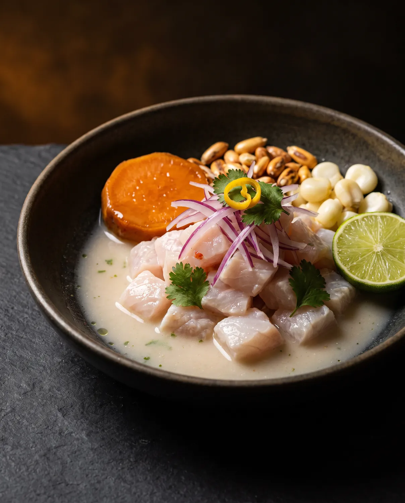
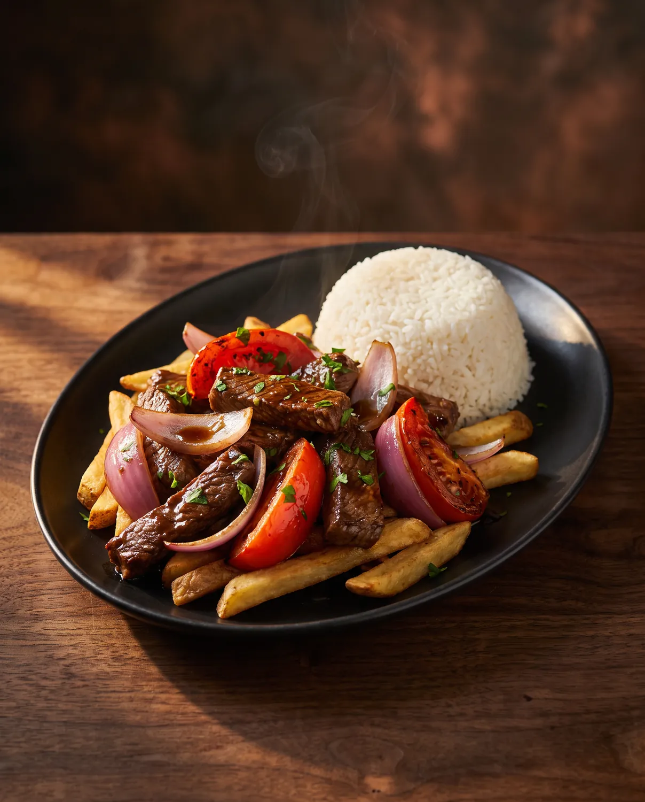
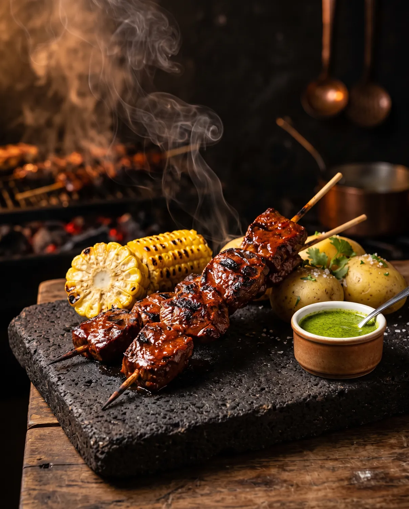
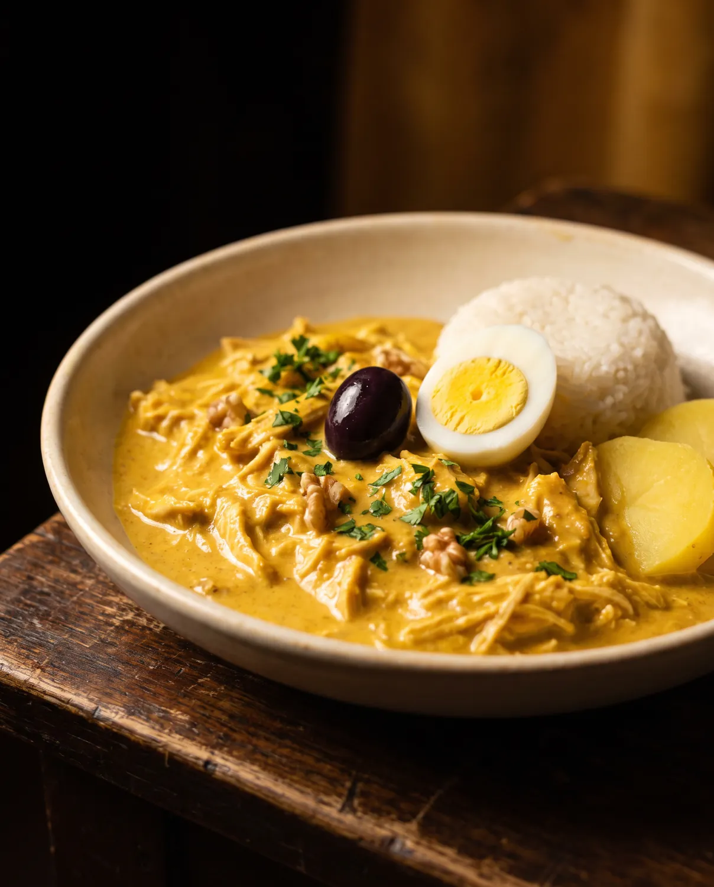
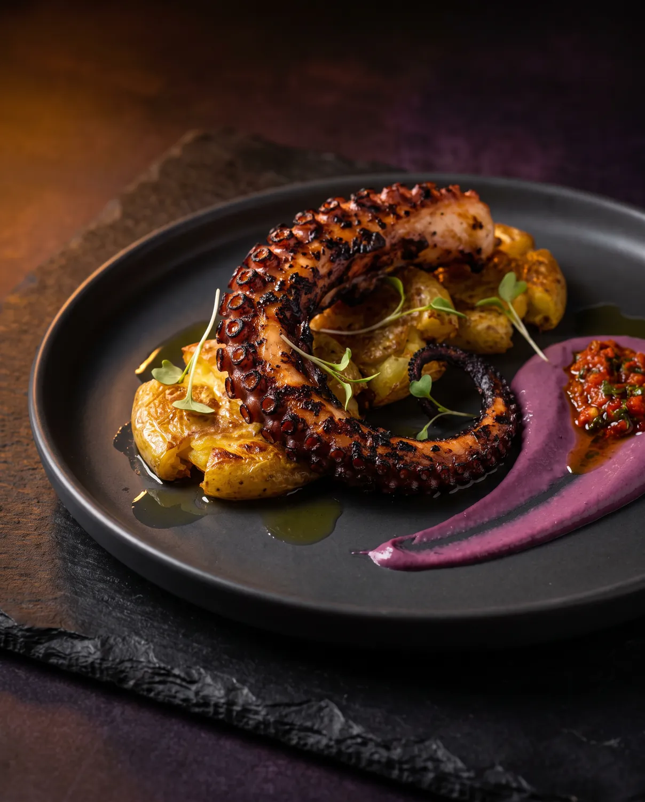

01
Ceviche Clásico
Line-caught rockfish cured in leche de tigre, red onion, ají limo, sweet potato and crunchy cancha.
$19Cocina Peruana · Frederick, Maryland
Bienvenidos
From the cold Pacific to the high Andes, Peruvian cooking is a meeting of cultures — Indigenous, Spanish, Japanese, Chinese and African. We bring that conversation to the table with fire, citrus and a pour of pisco.
Signature Dishes
Coastal, Andean and Amazonian flavors, cooked with Maryland produce and Chesapeake seafood.

Line-caught rockfish cured in leche de tigre, red onion, ají limo, sweet potato and crunchy cancha.
$19
Wok-flamed beef tenderloin, tomato, red onion, soy and ají amarillo over hand-cut fries and rice.
$34
Charcoal-grilled skewers marinated in ají panca and cumin, with choclo and huacatay sauce.
$17
Silky pulled chicken in a golden ají amarillo and walnut sauce, olives, egg and jasmine rice.
$28
Grilled octopus, botija olive aioli, crispy potatoes and chimichurri de rocoto.
$31Hungry yet?
El Bar
The national drink of Peru. Pisco quebranta shaken hard with key lime and egg white until it wears a cloud of foam, finished with three drops of Amargo Chuncho bitters.
$14Lima's favorite highball, brightened with fresh passion fruit, ginger ale and a long squeeze of lime. Light, tall and dangerously easy.
$13Golden ají amarillo syrup meets ripe mango and pisco acholado, served over a single clear cube with a smoked salt rim. A little heat, a lot of sun.
$15Mezcal and a slow-cooked reduction of chicha morada — purple corn, pineapple, clove and cinnamon. Deep, smoky and the color of an Andean dusk.
$14Chef Antonio Poggi
Our Story
Chef Antonio Poggi grew up between his grandmother's stove in Lima and the bustling stalls of Mercado de Surquillo, where he learned that Peruvian cooking is about generosity — bright, bold food meant to be shared.
After years in kitchens from Lima to Washington, D.C., he brought that spirit to downtown Frederick. The menu honors the classics, with Maryland ingredients and a few surprises along the way.
“In Peru, the table is where the family happens. I want every guest to feel they've been invited to ours.” — Chef Antonio Poggi
Ceviches, tiraditos and the coastal love of citrus and seafood.
Andean potatoes, corn, quinoa and slow-cooked stews.
Amazonian fruits, herbs and the warmth of ají charapita.
The Atmosphere
Kind Words
“The ceviche tasted like a summer afternoon in Lima. The leche de tigre was so good I drank it straight from the bowl.”
“Best pisco sour I've had outside of Peru. The bartenders treat every drink like theatre.”
“We came for an anniversary and left feeling like family. Warm lighting, gorgeous room and the lomo saltado was perfect.”
“A real date-night spot for downtown Frederick. Get the anticuchos and save room for the picarones.”
“Chef came out to say hello and told us the story behind his grandmother's ají de gallina. Unforgettable.”
“The Purple Mountain cocktail is a work of art. Elegant without being stuffy — exactly what Frederick needed.”
Plan Your Visit
A short walk from Carroll Creek Linear Park. Public parking is available in the nearby downtown garages; street parking is free after 8pm.
Get directions (opens in a new tab)The map is provided by Google, which may set cookies.
Open in Google Maps (opens in a new tab)Tonight in Frederick
Book a table, plan a celebration in our private dining room, or join us for Happy Hour, Tuesday to Friday, 5:00–6:30 pm.